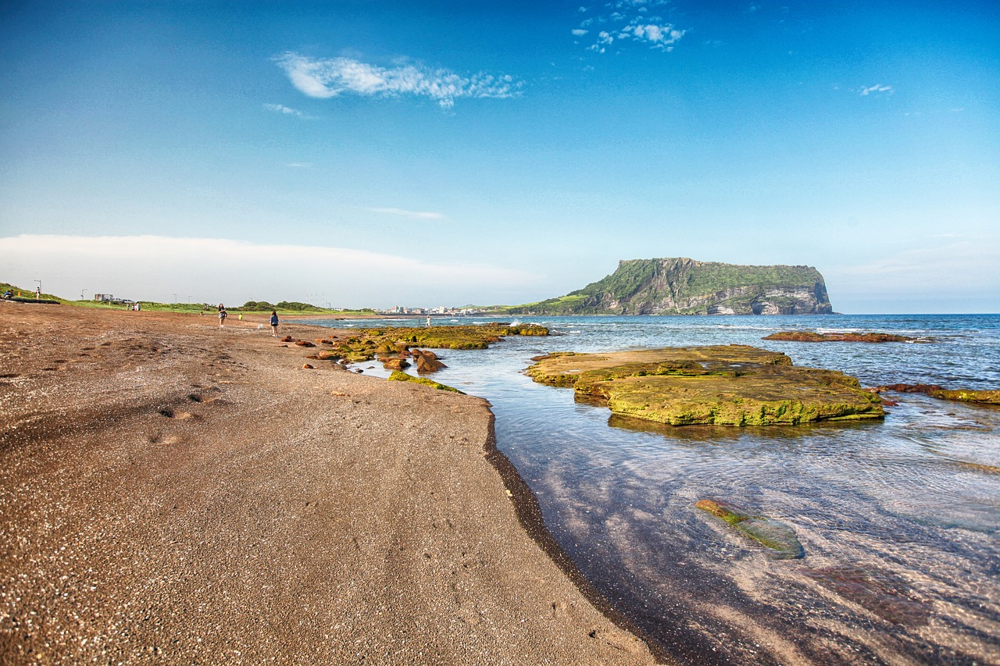

제주의 해변은 그 자체로 힐링 스팟입니다. 그중에서도 협재 해변은 맑은 바다와 하얀 모래사장으로 유명하죠. 해가 지기 전에 협재 해변으로 향했습니다. 도착하자마자 눈앞에 펼쳐진 에메랄드빛 바다가 저를 반겼습니다. 바다에 발을 담그고 해변을 따라 산책을 즐기며, 여행의 피로를 씻어낼 수 있었습니다. 모래 위에 앉아 석양을 감상하며, 제주도의 하루를 마무리했습니다. 석양이 바다를 붉게 물들이는 순간은 정말 감동적이었어요.